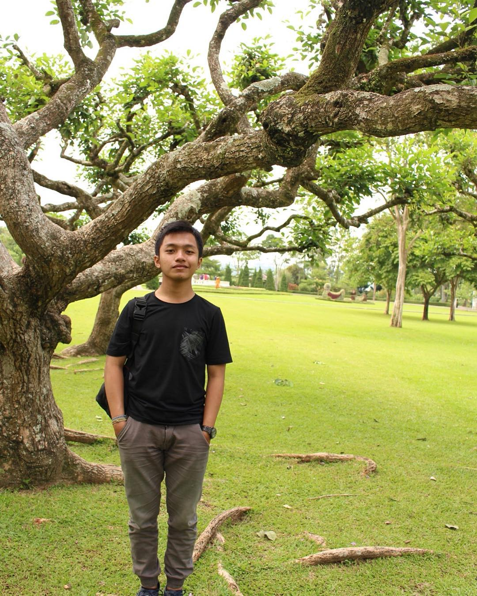

About the work
A photograph should feel like someone you know.
Lee Photowork is the portfolio of Andri Tri Yusmawan. It focuses on the people in a frame and the atmosphere around them.

The photographer
Andri Tri Yusmawan
Every session begins with the people involved. A calm pace leaves room for familiar expressions, small changes in light, and the details that would be easy to miss in a hurried shoot.
The work moves between outdoor locations, homes, and studio settings. Natural light gives each space its own tone and keeps the images connected to the moment they came from.
Start a conversation